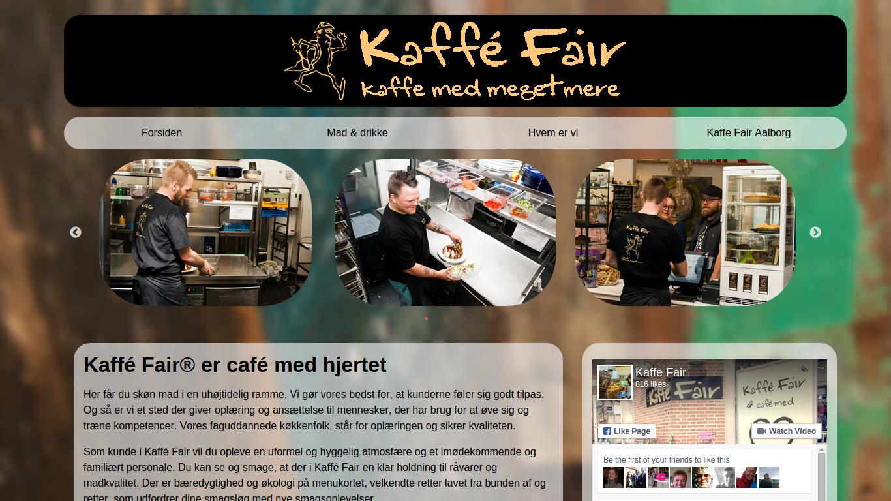
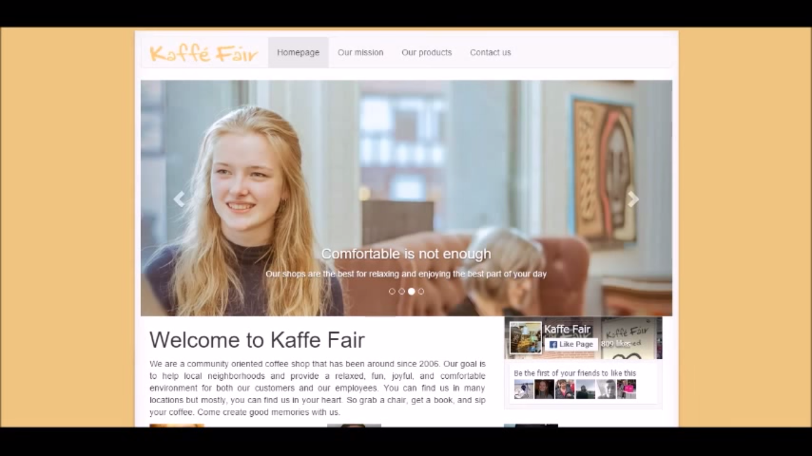
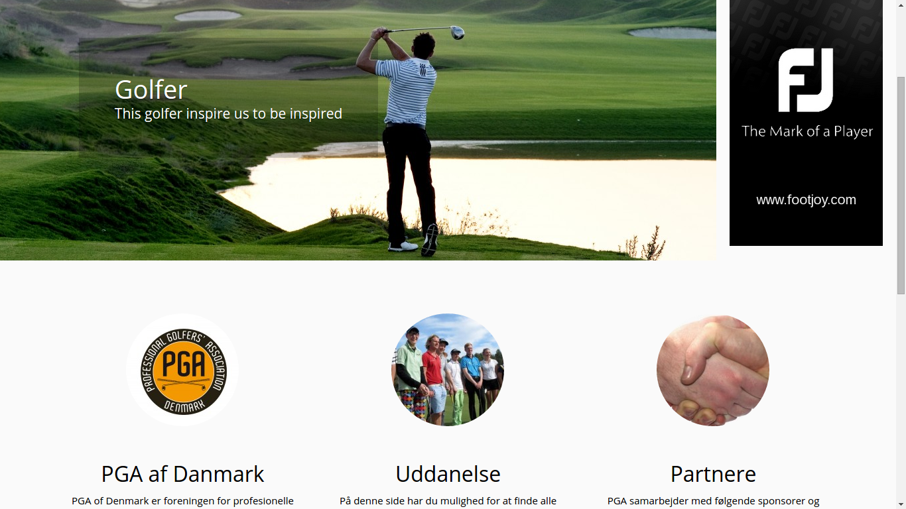

CV

PERSONAL DETAILS ↓
Place of birth: Rosario, Argentina.
Date of birth: January 19th, 1988.
Home address: Markusgade 1, (9000) Aalborg, Denmark.
Phone number: +4593993436
Email address: emilio@lundgaardlopez.com
ACADEMIC EXPERIENCE ↓
-
Name of the course: Licenciatura en Ciencias de la Computación. Website.
Institution: Universidad Nacional de Rosario, Rosario, Argentina. Website.
Description: The education is equivalent to a Master in Computer Science. It is a 5-year education with a final research thesis. For more information about the education visit www.fceia.unr.edu.ar/lcc.
Dates: Started 2006 and continuing.
Total completed of the education: 90%.
Grades average: 8.59. -
Name of the course: Polimodal en Producción de Bienes y Servicios.
Institution: Instituto Politécnico Superior ”Libertador General San Martín”, Rosario, Argentina. Website.
Description: Integrated education on goods and services production.
Dates: From 2003 to 2005.
Total completed of the education: 100%. -
Name of the course: Educación General Básica.
Institution: Cristobal Colón, Rosario, Argentina and Instituto Politénico Superior ”Libertador General San Martín”, Rosario,Argentina.
Description: General basic education mandatory in Argentina.
Dates: From 1994 to 1999 at Cristobal Colón and from 2000 to 2002 at Instituto Politécnico Superior.
Total completed of the education: 100%.
PROFESSIONAL EXPERIENCE ↓
-
Position: IT Consultant.
Company: Itecnis S.R.L., Rosario, Santa Fe, Arngetina. Website.
Dates: October 2013 – April 2014
Description: My goal at this position was to provide solutions to customers and coworkers including for example automatic backup services, web and mail servers maintenance, network usage, network devices configuration, and others. Among other services, I was in charge of providing level 1 assistance to some of the companies we provided services to. That included setting up new workstations, fixing existing ones and educating users on different characteristics of their systems. I was in charge of several virtualization projects some of which required setting up mail servers, web servers and other services. I was occasionally involved in developing projects baring in mind documentation, UX/UI design, and both backend and frontend development. -
Position: Intern.
Company: Itecnis S.R.L., Rosario, Santa Fe, Arngetina. Website.
Dates: July 2013 – September 2013 (3 months)
Description: During my internship I was in charge of small projects prepared to encourage me to get into the company’s world. While developed some small part of my time, most of it was destined to R&D, infrastructure and network maintenance. Throughout my internship I learnt how to use everyday tools for a working environment of this kind (e.g. Linux shell, networking diagnose tools, etc.).
Portfolio
|
Kaffe Fair's webpage
Description: Webpage developed in 2015 for the coffee shop Kaffe Fair. You can try the final result at Kaffe Fair's homepage (kaffefair.dk). |
 |
|
Kaffe Fair's alternative webpage
Description: Alternative proposed for the development of a new webpage for Kaffe Fair. For more information about this alternative and a video showing a glance of it check out this page. |
 |
|
PGA of Denmark web re-design
Description: Proposed design for the re development of PGA of Denmark's website. It was done in Wordpress keeping in mind ease of usability, responsiveness, and simplicity. The design can be checked at pga.lundgaardlopez.com. |
 |
{kind=link}
{kind=link}
SKILLS
Programming languages ↓
Advcanced
- HTML, CSS, Javascript
- C
- C++
- Standard ML
Intermediate
- C#
- Haskell
- LaTex
- Bash
- Python
Basic
- .Net technologies
- PHP
- Java
Development skills ↓
Front end
I have used several tools and frameworks when it came to front end development. For example, I’ve used Twitter Bootstrap, Foundation, JQuery, and others. I like keeping modularity in my applications because it provides reusable, debuggable, clean code.
I have experience with graphic tools such as Gimp, Inkscape, Adobe Photoshop, and Adobe Illustrator.
Back end
The tools and frameworks used for back end development are naturally divided into three categories: server, application, and database.
As most of my experience developing back end is in Linux, my favorite means of serving used to be the Apache Webserver although I have used several small lightweight servers mostly for development stages. Recent applications provide an integrated server that can be used both at development and production stages, for example Express for Node.js.
Back end application come in several forms. The languages I have used for back end are PHP, Python, and Ruby, as well as Javascript when developing applications for Node.js.
My experience with databases is mostly using MySql though I have experience installing and setting up instances of Microsoft SQL Server.
CMS development
I have experience installing and maintaining different CMS. I have worked with WordPress for a long time and recently started developing in Umbraco CMS.
Formal methods
Some formal methods languages or techniques I have studied are Statecharts, Z, CSP, and TLA+.
Network and domain management
I have experience working with DNS settings as well as diagnosing networks and connections.
Operating Systems and IDEs
I am experienced with Linux with which I’ve worked since 2006. I have used the operating system (in different distros) for programming as well as for managing systems, diagnosing and monitoring external stations, and for daily personal use. I know how to use a terminal and worked with several IDEs for example: Sublime Text, Vim, Atom, Eclipse, and, most recently, Visual Studio Code.
My experience with Microsoft Windows includes developing in Visual Studio and using different tools as WebMatrix, IIS, and XAMPP.
Virtualization
I have experience creating and managing virtual machines with Virtual Box.
Versioning
Normally I use Git to keep versions of my development under the best practices. I also have experience using SVN.
LANGUAGE SKILLS ↓
-
Spanish.
Written and spoken level: native language. -
English.
Written and spoken level: advanced. -
Danish.
Written and spoken level: intermediate.